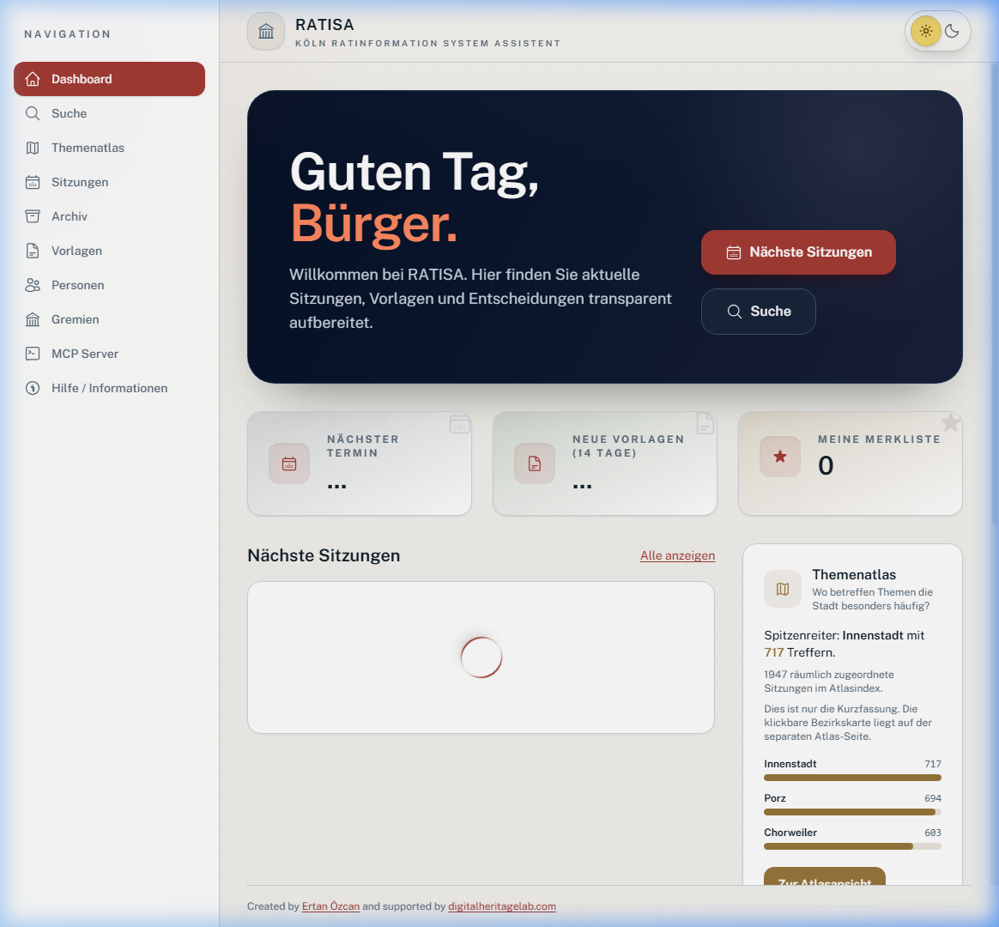
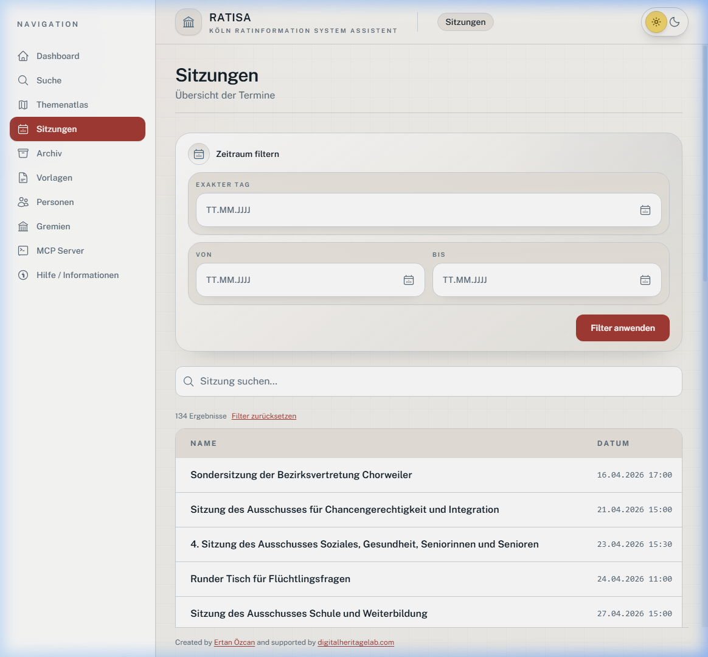

Ein digitales Werkzeug, das die Arbeit des Kölner Stadtrats für Bürgerinnen, Bürger und Verwaltung transparent, durchsuchbar und verständlich macht.
Kommunalpolitische Informationen sind in Deutschland zwar öffentlich, aber selten wirklich zugänglich.
Das offizielle Ratsinformationssystem der Stadt Köln enthält tausende Beschlüsse, Sitzungen und Anträge –
doch die Navigation ist für normale Bürgerinnen und Bürger kaum intuitiv nutzbar.
RATISA löst dieses Problem: Eine moderne, übersichtliche Oberfläche macht alle Ratsdaten
durchsuch- und filterbar. Wer wissen möchte, wann ein Ausschuss tagt oder welche Vorlagen zu einem Thema
vorliegen, findet die Antwort in Sekunden – inklusive KI-unterstützter Suche in natürlicher Sprache.


Dieses Projekt entstand aus eigener Initiative – ohne Auftraggeber, ohne Vorgaben.
Es zeigt mein Interesse an der Schnittstelle zwischen Verwaltung, Digitalisierung und Bürgerservice.
Ich bin überzeugt, dass gut gestaltete digitale Werkzeuge die öffentliche Verwaltung stärken
und Bürgerinnen und Bürgern echte Teilhabe ermöglichen.
RATISA steht für meine Arbeitsweise: eigenverantwortlich, lösungsorientiert und immer mit Blick auf den Menschen,
der die Anwendung am Ende nutzt.